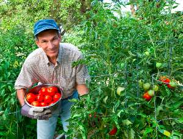
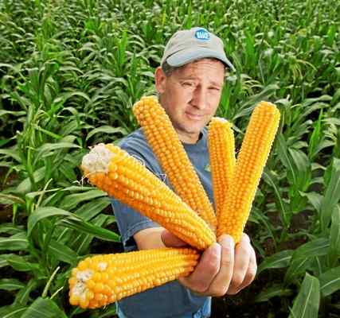

THE TOMATO BOYS
 Home
About
Contact
Home
About
Contact
THE TOMATO BOYS
President
neville.ian@uwlax.edu
Ian graduated from Orville University with a B.S. in tomato farming. He has owned his own farm since he was 15 and continues to strive for his goal of planting the first tomato on Mars
Vice President
corn.man@uwlax.edu
Tom graduated from Tokyo University with a B.S. in Genetic Engineering. He helped in cloning the first human in 1937. He also start his first farm in 1915 producing corn. Tom met Ian at a research convention related to Genetic Engineering and they have been partners since.
Regional Offices
Mount Tomato Regional Office
Tomato Mountain Farm
N7720 Sandy Hook Road
Brooklyn, WI 53521
Tomato Hill Regional Office
Tomato Hill
28392 Bladerunner Road
Sordinene, CO 33521